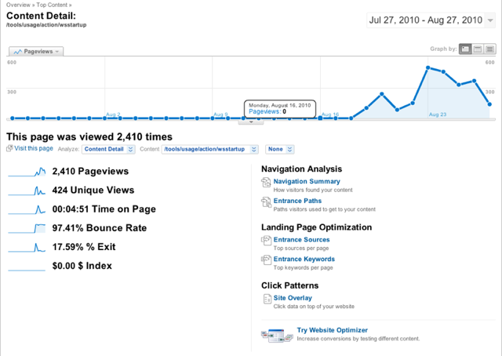
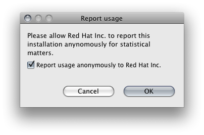
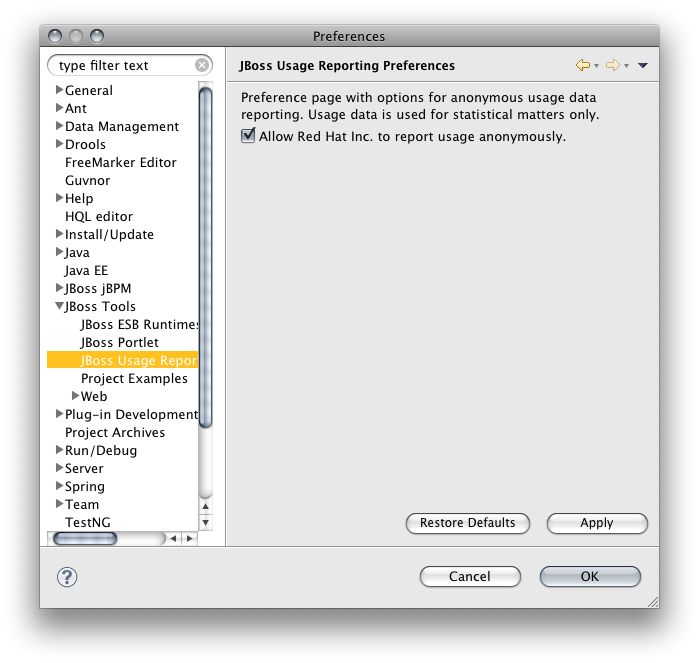

|
3.2.0.M2 comes a component that shall allow us to better fullfill our customers needs and expectations. The usage reporting plugin collects data about the local eclipse installation and reports them anonymously.
We collect the version, plugins, etc. and report them to a google analytics account.

Related Jira
The plugin will not report any information without explicit user consent.
When run for the first time, JBoss Tools / JBoss Developer Studio will ask the user if he agrees herein.

The user may, at any time, withdraw his consent and disable usage reporting in the preferences.

|